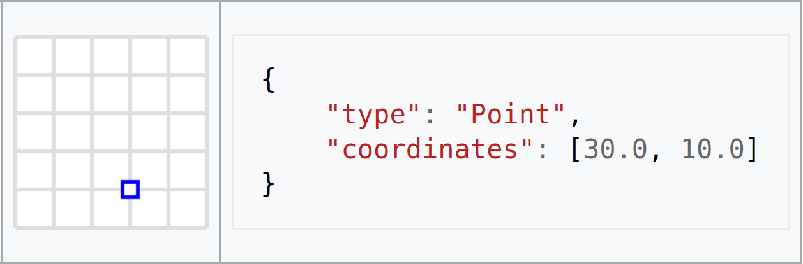
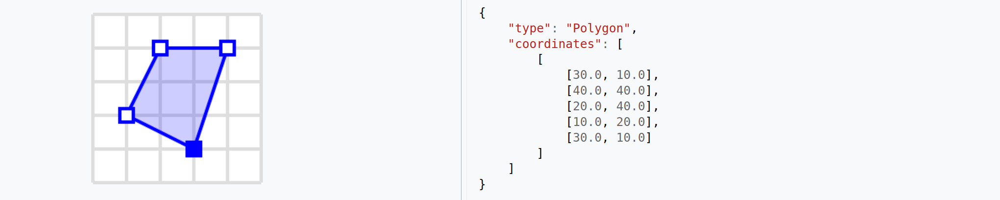

Learning FastAPI
On Hard Hode
Getting out lots of Geo data fast »
Elena Williams
github/elena
Software Engineer, Geoscape
Sessional Academic, CECC, ANU
Organiser, Canberra Python User Group
Organiser, Django Girls Canberra
DSF/PSF
github.com/elena/FastAPI-Geo-talk
"just zis guy, you
know?"
What we ARE doing here today:
- Geocoded National Address File (G-NAF)
FastAPI
- (APIs) [not really]
- (Async) [not really]
- Pydantic
GeoJSON
Pydantic
What we are NOT doing here today:
Not full web application
no frontend hereNot talking much about data layer
it’s not python and everyone's data is special ✨Not talking about deployment
because serverless, feel free to pick your own poison
Per abstract:
APIs! Async! Type validation! ISO standards!
Large geodata!
NOT Geoscience Australia
NOT Geoscience Australia
Australian Addresses
Names for "locations"
Where do addresses get defined?
Where do addresses get defined?
Councils + States + Federal
"guidelines"
"guidelines"
Australia 1994:  Census year
Census year
Census year
Owned by
Not Government, but Government owned
G-NAF (2004) G-NAF-Core (2022)
Flask
Starlette
FastAPI
app.py
from flask import Flask
app = Flask(__name__)
@app.route("/")
def root():
return "Hello, World!
"
app.py
from fastapi import FastAPI
app = FastAPI()
@app.get("/")
async def root():
return {"message": "Hello World"}
from fastapi import FastAPI
app = FastAPI()
@app.get("/")
async def root():
return {"message": "Hello World"}
Flask
from flask import Flask
app = Flask(__name__)
@app.route("/")
def root():
return "Hello, World!
"
Run locally:
INFO: Uvicorn running on http://127.0.0.1:8000 (Press CTRL+C to quit) INFO: Started reloader process [28720] INFO: Started server process [28722] INFO: Waiting for application startup. INFO: Application startup complete.
http://localhost:8000/docs
Self-generated OpenAPI documentation
Async
"threading is for working in parallel,
async is for waiting in parallel"
async is for waiting in parallel"
async and await
async def get_data():
return {"item": "Bar"}
async def do_logic():
data = await get_data()
return {"Foo": data["item"]}
@app.get("/")
async def root():
return await do_logic()
Quick filter
results_list = [
"abcd",
"abc",
"ab",
"a",
]
async def get_results(term):
return [i for i in results_list if search_term in i]
@app.get("/search/")
async def root(term: str = None) -> Dict[str, List[str]]:
return {"output": await get_results(term)}
Quick filter
address_list = [
"1 p g love av",
"1 paanja av",
"1 par cres",
"1 park av",
"1 park range way",
"1 park rd",
"2 park rd"
"12 park rd"
]
@routes_eg2.get("/predict/address/")
async def root(term: str = None) -> dict[str, list[str]]:
return {"output": [i for i in address_list if term in i]}
https://demo.geoscape.com.au/predictive/
Pydantic
Pydantic
Typing in Python
>>> type("abc")
<class 'str'>
>>> type(123)
<class 'int'>
>>> type(123.456)
<class 'float'>
>>> type([1, 2 ,3])
<class 'list'>
>>> type(True)
<class 'bool'>
>>> type(my_fib(1))
<class 'int'>
>>> type(Foo())
<class '__main__.Foo'>
>>> "abc" # str object
>>> 123 # int object
>>> 123.456 # float object
>>> [1, 2, 3] # list object
>>> True # bool object
>>> my_fib(1) # function/callable object
>>> Foo() # custom object
>>> "abc" * 2 # str object
"abcabc"
>>> 123 * 2 # int object
246
>>> 123.456 * 2 # float object
246.912
>>> [1, 2, 3] * 2 # list object
[1, 2, 3, 1, 2, 3]
>>> True * 2 # bool object
2
>>> my_fib(2) * 2 # function/callable object
2
>>> Foo() * 2 # custom object
Traceback (most recent call last):
TypeError: unsupported operand type(s) for *: 'Foo' and 'int'
>>> "abc" * 3 # str object
"abcabcabc"
>>> 123 * 3 # int object
369
>>> 123.456 * 3 # float object
370.368
>>> [1, 2, 3] * 3 # list object
[1, 2, 3, 1, 2, 3, 1, 2, 3]
>>> True * 3 # bool object
3
>>> my_fib(3) * 3 # function/callable object
6
>>> Foo() * 3 # custom object
Traceback (most recent call last):
TypeError: unsupported operand type(s) for *: 'Foo' and 'int'
>>> "abc" * 4 # str object
"abcabcabcabc"
>>> 123 * 4 # int object
492
>>> 123.456 * 4 # float object
493.824
>>> [1, 2, 3] * 4 # list object
[1, 2, 3, 1, 2, 3, 1, 2, 3, 1, 2, 3]
>>> True * 4 # bool object
4
>>> my_fib(4) * 4 # function/callable object
12
>>> Foo() * 4 # custom object
Traceback (most recent call last):
TypeError: unsupported operand type(s) for *: 'Foo' and 'int'
But I want strictly validate my
Builtins:
types ...
typing typeddict dataclassCommunity:
alecthomas/voluptuous python-attrs/attrs keleshev/schema pyeve/cerberus Pylons/colander ...
Pydantic
dataclass
from pydantic.dataclasses import dataclass
@dataclass
class MyDataClass:
my_str: str
my_int: int
my_float: float
my_bool: bool
my_list: list
Pydantic BaseModel
from pydantic import BaseModel
class MyPydantic(BaseModel):
my_str: str
my_int: int
my_float: float
my_bool: bool
my_list: list
Pydantic BaseModel
from pydantic import BaseModel
from typing import List
class MyPydantic(BaseModel):
my_str: str
my_int: int
my_float: float
my_bool: bool
my_list: List[int]
Pydantic BaseModel
from pydantic import BaseModel
from typing import List
class Foo(BaseModel):
baz: str
class MyPydantic(BaseModel):
my_custom: Foo
my_str: str
my_int: int
my_float: float
my_bool: bool
my_list: List[int]
Cast Pydantic Instance
>>> my_data = {
... "my_custom": {"baz": "qux"},
... "my_str": "abc",
... "my_int": 123,
... "my_float": 123.456,
... "my_bool": True,
... "my_list": [1, 2, 3], .
... }
Cast Pydantic Instance
>>> my_data = {
... "my_custom": {"baz": "qux"},
... "my_str": "abc",
... "my_int": 123,
... "my_float": 123.456,
... "my_bool": True,
... "my_list": [1, 2, 3], .
... }
>>> MyPydantic(**my_data)
Cast Pydantic Instance
>>> my_data = {
... "my_custom": {"baz": "qux"},
... "my_str": "abc",
... "my_int": 123,
... "my_float": 123.456,
... "my_bool": True,
... "my_list": [1, 2, 3],
... }
>>> MyPydantic(**my_data)
MyPydantic(my_custom=Foo(baz='qux'), my_str='abc', my_int=123, my_float=123.456, my_bool=True, my_list=[1, 2, 3])
Rubbish Data
>>> my_funky_data = {
... "my_class": "a string", .
... "my_str": "a string",
... "my_int": "a string",
... "my_float": "a string",
... "my_bool": "a string",
... "my_list": "a string",
... }
>>> MyPydantic(**my_funky_data)
Rubbish Data is nope
>>> MyPydantic(**my_funky_data)
Traceback (most recent call last):
pydantic_core._pydantic_core.ValidationError: 4 validation errors for MyPydantic
my_int
Input should be a valid integer, unable to parse string as an integer [type=int_parsing, input_value='a string', input_type=str]
For further information visit https://errors.pydantic.dev/2.1.2/v/int_parsing
my_float
Input should be a valid number, unable to parse string as a number [type=float_parsing, input_value='a string', input_type=str]
For further information visit https://errors.pydantic.dev/2.1.2/v/float_parsing
my_bool
Input should be a valid boolean, unable to interpret input [type=bool_parsing, input_value='a string', input_type=str]
For further information visit https://errors.pydantic.dev/2.1.2/v/bool_parsing
my_class
Input should be a valid dictionary or instance of Foo [type=model_type, input_value='a string', input_type=str]
For further information visit https://errors.pydantic.dev/2.1.2/v/model_type
Literal is good
from pydantic import BaseModel
from typing import Literal
StateTerritory = Literal["ACT", "NSW", "NT", "OT", "QLD", "SA", "TAS", "VIC", "WA"]
class FeatureProperty(BaseModel):
street_number: str
street_name: str
locality: str
postcode: str
state: Literal[StateTerritory]
Literal is good
>>> feature_data = {
... "street_number": "101",
... "street_name": "North Terrace",
... "locality": "Adelaide",
... "postcode": "5000",
... "state": "SOME RANDOM THING NOT A STATE" .
... }
>>> FeatureProperty(**feature_data)
Invalid
Literal is nope
>>> feature_data = {
... "street_number": "101",
... "street_name": "North Terrace",
... "locality": "Adelaide",
... "postcode": "5000",
... "state": "SOME RANDOM THING NOT A STATE"
... }
>>> FeatureProperty(**feature_data)
Traceback (most recent call last):
pydantic_core._pydantic_core.ValidationError: 1 validation error for Address
state
Input should be 'ACT', 'NSW', 'NT', 'OT', 'QLD', 'SA', 'TAS', 'VIC' or 'WA' [type=literal_error, input_value='SOME RANDOM THING NOT A STATE', input_type=str]
For further information visit https://errors.pydantic.dev/2.1.2/v/literal_error
Pydantic
Field
from typing import Union
from uuid import uuid4
from pydantic import BaseModel, Field
class Coordinate(BaseModel):
lon: Union[float, int] = Field(ge=-180, le=180)
lat: Union[float, int] = Field(ge=-90, le=90)
Pydantic:
Field defaults
from uuid import uuid4
from pydantic import BaseModel, Field
class MyClass(BaseModel):
my_address: str = Field(default='My house')
my_hash_key: int = Field(default_factory=lambda: uuid4().hex)
love_for_python: float = Field(
allow_inf_nan=True, default=float('inf')
)
Pydantic:
Field aliases
class MyClass(BaseModel):
my_home: str = Field(alias='my_castle')
data_a: str = Field(
validation_alias='incoming_a',
serialization_alias='response_a'
)
>>> MyClass(incoming_a="a").model_dump()
{'data_a': 'a'}
>>> MyClass(data_a="a").model_dump(by_alias=True)
{'response_a': 'a'}
Pydantic Inheritance
class Building(BaseModel):
id: str = "My building ID"
class House(Building):
...
@computed_field
@property
def get_a_field(self):
return "something I want computed"
FastAPI + Pydantic <3
class FeatureProperty(BaseModel):
address_id: str
street_number: str
street_name: str
locality: str
postcode: str
centroid: Coordinate
state: Literal[StateTerritory]
@app.get("/feature/properties")
async def feature_properties(address_id: str) -> FeatureProperty:
properties_kwargs: dict = await get_properties(address_id)
return FeatureProperty(**properties_kwargs)
GeoJSON
GeoJSON
{
"geometry": {
"type": "Point",
"coordinates": [138.59469, -34.92086]
},
"type": "Feature",
"properties": {
"name": "Adelaide Convention Centre",
"isPyConAU": true,
"stateTerritory": "SA"
}
}
Pydantic GeoJSON BaseModels
class Geometry(BaseModel):
type: Literal["Point", "LineString", "Polygon", "MultiPolygon"]
coordinates: List[]
class GeoJSONFeature(BaseModel):
geometry: Geometry
type: str = "Feature"
properties: FeatureProperty
GeoJSON FeatureCollection
{
"type": "FeatureCollection",
"features": [
{
"type": "Feature",
"geometry": {"type": "Point", "coordinates": [138.59469, -34.92086]},
"properties": {"name": "Adelaide Convention Centre", "is_pyconau_here": True}
},
{
"type": "Feature",
"geometry": {"type": "Point", "coordinates": [151.20009, -33.87468]},
"properties": {"name": "Sydney Convention Centre", "was_pyconau_here": True}
}
]
}
Pydantic GeoJSON FeatureCollection BaseModels
class Geometry(BaseModel):
type: Literal["Point", "LineString", "Polygon", "MultiPolygon"]
coordinates: List[float]
class GeoJSONFeature(BaseModel):
type: str = "Feature"
geometry: Geometry
properties: Optional[FeatureProperty, None]
class GeoJSONFeatureCollection(BaseModel):
type: str = "FeatureCollection"
features: List[GeoJSONFeature]
Point

LineString
Polygon

Multi-Polygon
Geometry Pydantic BaseModels
class ListString(Geometry):
type: str = "ListString"
coordinates: List[Coordinate]]
class Polygon(Geometry):
type: str = "Polygon"
coordinates: List[List[Coordinate]]]
class MultiPolygon(Geometry):
type: str = "MultiPolygon"
coordinates: List[List[List[Coordinate]]]]
G-NAF response
{
"type": "FeatureCollection",
"features": [
{
"type": "Feature",
"properties": {"addressId": "GASA_721199769", ...},
"geometry": {"type": "Point", "coordinates": [138.59380879, -34.92043836]},
},
{
"type": "Feature",
"properties": {"addressId": "GASA_424196378", ...},
"geometry": {"type": "Point", "coordinates": [138.59352127, -34.92156008]},
},
{
"type": "Feature",
"properties": {...},
"geometry": {"type": "Point", "coordinates": [138.59352048, -34.92158711]},
}
],
"query": [138.595470, -34.920237],
"requestTimeStamp": 1690247769.162439,
}
...
<link rel="stylesheet" href="https://unpkg.com/leaflet@1.9.4/dist/leaflet.css" />
<script src="https://unpkg.com/leaflet@1.9.4/dist/leaflet.js"></script>
</head>
<body>
<div id="map"></div>
</body>
<script>
// Example: Leaflet
var map = L.map('map').setView([-34.92106, 138.59442], 18);
L.tileLayer('https://tile.openstreetmap.org/{z}/{x}/{y}.png').addTo(map); //credit: openstreetmap
var geojsonResponse = {
"type": "FeatureCollection",
"features": [
{
"type": "Feature",
"properties": {"addressId": "GASA_721199769", ...},
"geometry": {"type": "Point", "coordinates": [138.59380879, -34.92043836]},
},
{
"type": "Feature",
"properties": {"addressId": "GASA_424196378", ...},
"geometry": {"type": "Point", "coordinates": [138.59352127, -34.92156008]},
...
"query": [138.595470, -34.920237],
"requestTimeStamp": 1690247769.162439,
}
L.geoJSON(geojsonResponse, {
pointToLayer: function (feature, latlng) {
return L.circleMarker(latlng, geojsonMarkerOptions);
},
}).addTo(map);
</script>
...
FIN
Come speak at the:
Canberra Python User Group
Support/be a coach at:
DjangoGirls